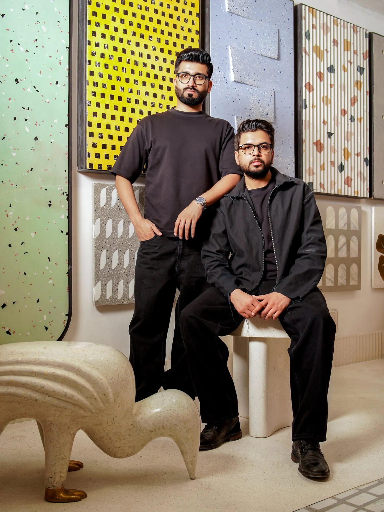
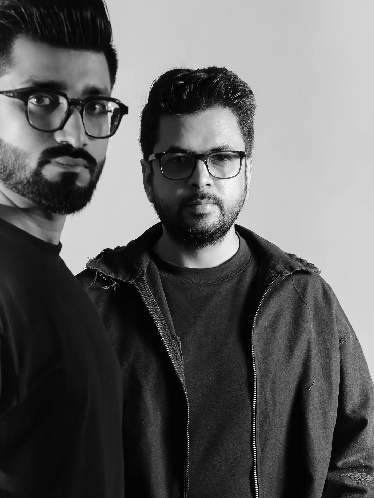
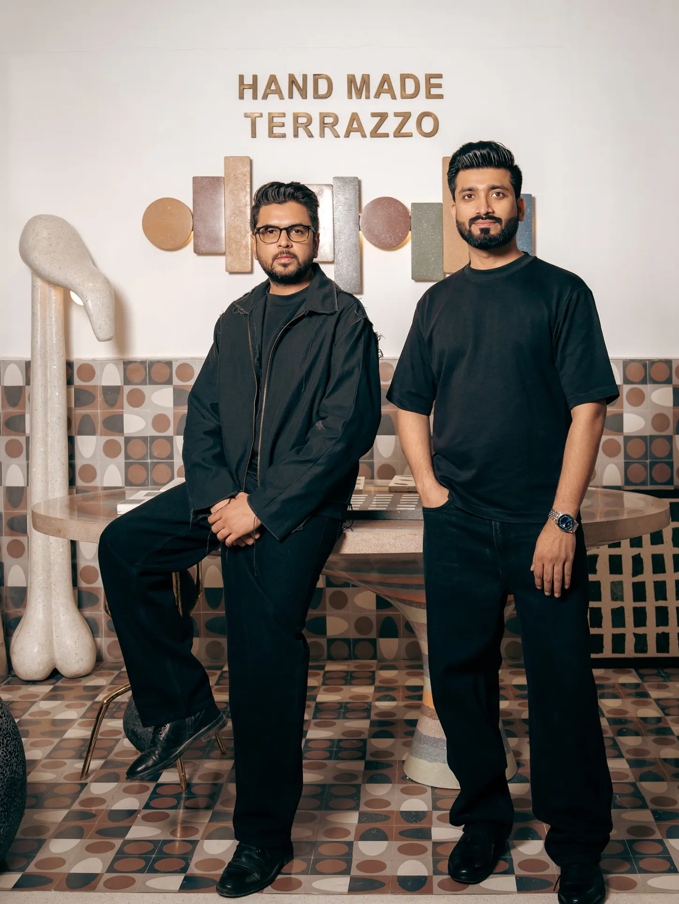
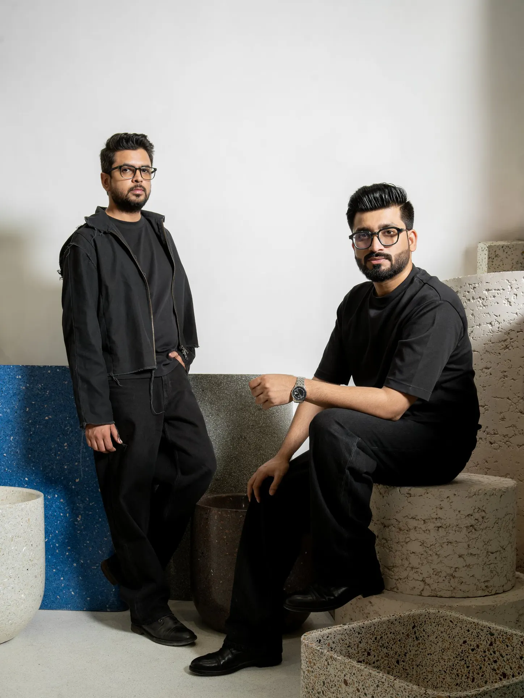
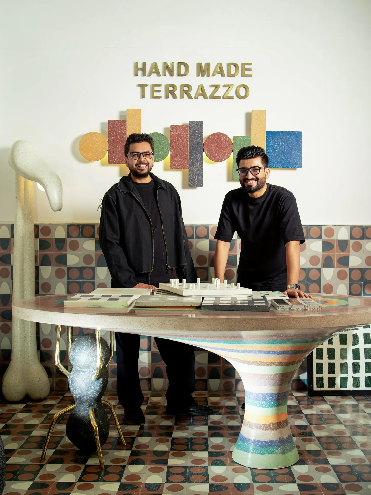
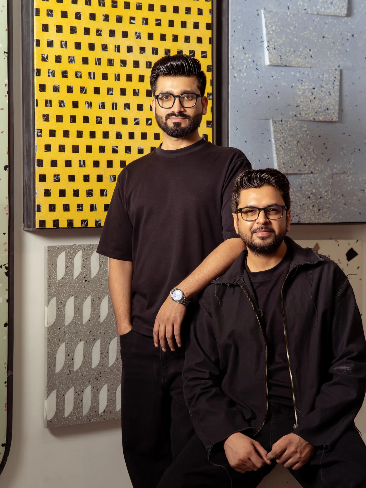
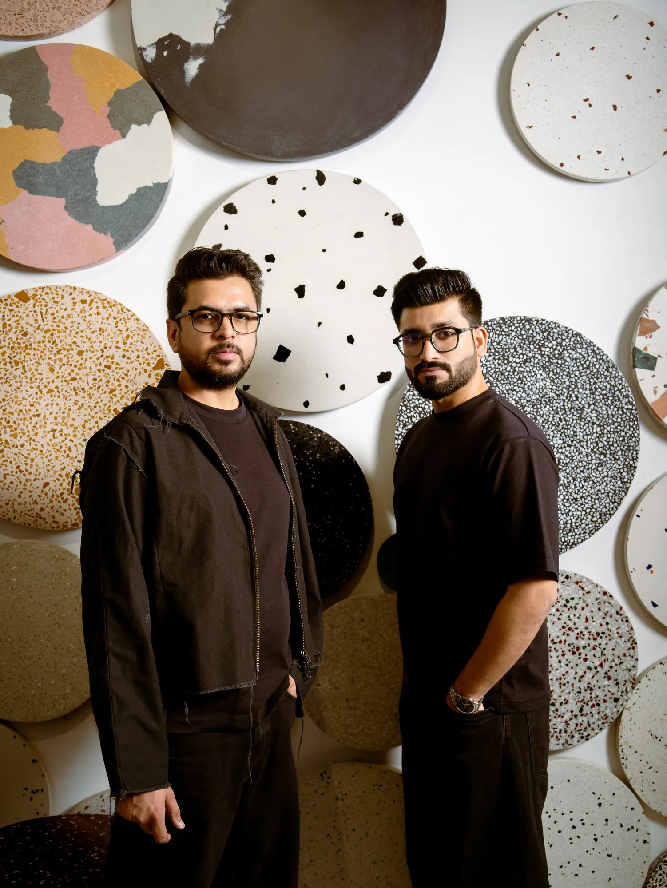
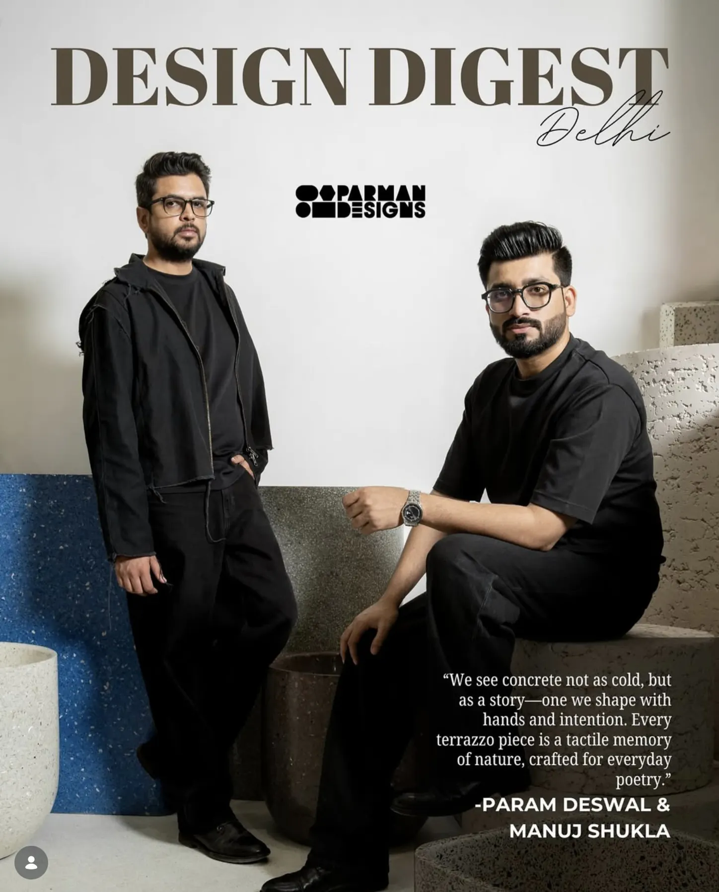
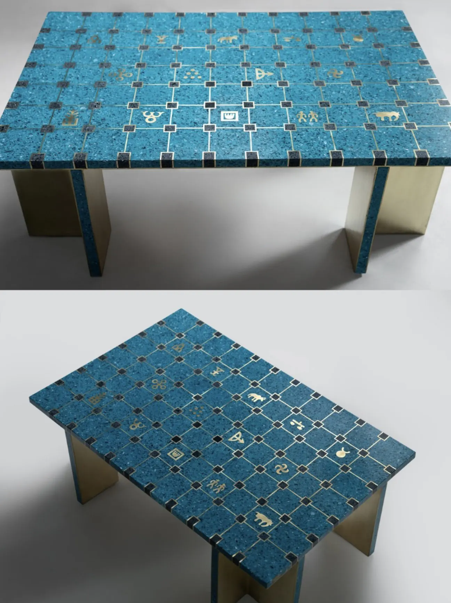

Terrazzo is a material you want to touch, which makes it hard to sell in a feed. So we stopped designing around the product and started shooting it — the studio, the founders, the raw slabs and the finished table.

Param and Manuj wear black in every frame, so the colour in the picture is always terrazzo. We shoot the same studio monthly — sample wall, slab shelf, the tiled floor — and rotate which surface leads.







The cover frame came out of a regular monthly shoot, not a separate commission. Same studio, same black wardrobe, one composition held back for it.

Brass grid, black chips and hand-cut symbols only read from directly above, so every piece is shot twice — one three-quarter view for the shelf presence, one plan view for the pattern. Same seamless grey, same light, so the whole catalogue sits together on a page.